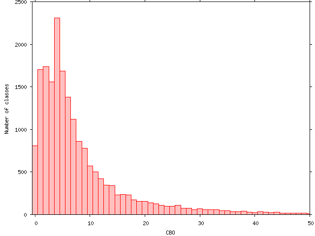

ckjm - A Tool for Calculating Chidamber and Kemerer Java Metrics
Diomidis Spinellis
Department of Management Science and Technology
Athens University of Economics and Business
Athens, Greece
dds@aueb.gr
Introduction
The program ckjm calculates Chidamber and Kemerer object-oriented
metrics by processing the bytecode of compiled Java files.
The program calculates for each class the following six metrics, and displays
them on its standard output, following the class's name:
- WMC: Weighted methods per class
- DIT: Depth of Inheritance Tree
- NOC: Number of Children
- CBO: Coupling between object classes
- RFC: Response for a Class
- LCOM: Lack of cohesion in methods
- Ca: Afferent coupling (not a C&K metric)
- NPM: Number of Public Methods for a class (not a C&K metric)
I wrote this program out of frustration over the
lack
of reliable programs to calculate the
Chidamber and Kemerer object-oriented metrics.
The programs I found on the web were either
incomplete (they calculated only some of the metrics),
or unreliable (they calculated results that were obviously wrong),
or extremely inefficient (they required GBs of RAM and hours of processing).
Ckjm is mean and lean, following the Unix tradition of doing
one thing well.
It will not automatically recurse directories looking for the files
you want measured,
it does not offer a GUI and fancy diagrams (or even an XML output facility),
and it calculates only few metrics other than the six ones specified
by Chidamber and Kemerer.
However, it does this job thoroughly, and efficiently:
on a 1.6GHz Pentium-M machine version 1.1 of the tool
processed the 33MB of the Eclipse 3.0
jar files (19717 classes) in 95 seconds.
To run the program you simply specify the class files
(or pairs of jar/class files)
on its command line or standard input.
The program will produce on its standard output a line for each class
containing the complete name of the class and the values of the corresponding
class metrics.
This operation model allows the tool to be easilly extended using textual
pre and post processors.
Operation
To run ckjm you must run java with the -jar
flag, providing as its argument the location of the file
ckjm.jar.
Next, you can specify as arguments the Java class files you want
to analyze.
Example:
java -jar /usr/local/lib/ckjm-1.5.jar build/classes/gr/spinellis/ckjm/*.class
(Replace the sequence /usr/local/lib/ckjm-1.5.jar
with the actual path and filename of the ckjm version you are using.)
The command's output will be a list of class names (prefixed by the
package they are defined in), followed by the corresponding
metrics for that class: WMC, DIT, NOC, CBO, RFC, LCOM, Ce, and NPM.
gr.spinellis.ckjm.ClassMetricsContainer 3 1 0 3 18 0 2 2
gr.spinellis.ckjm.MethodVisitor 11 1 0 21 40 0 1 8
gr.spinellis.ckjm.CkjmOutputHandler 1 1 0 1 1 0 3 1
gr.spinellis.ckjm.ClassMetrics 24 1 0 0 33 196 6 23
gr.spinellis.ckjm.MetricsFilter 7 1 0 6 30 11 2 5
gr.spinellis.ckjm.ClassVisitor 13 1 0 14 71 34 2 9
gr.spinellis.ckjm.ClassMap 3 1 0 1 21 0 0 2
gr.spinellis.ckjm.PrintPlainResults 2 1 0 2 8 0 1 2
If the classes are located in a jar archive, you can
specify as a single argument the name of the archive,
followed by a space, followed by the name of the class in the archive.
java -jar /usr/local/lib/ckjm.jar 'ant-jai.jar org/apache/tools/ant/types/optional/image/Text.class'
Finally, instead of specifying the classes to be analyszed as the
command's arguments, you pass them (as class files, or as jar file, class
file pairs) on the command's standard input.
The following example will process all class files located in the
build directory.
find build -name '*.class' -print | java -jar /usr/local/lib/ckjm.jar
The program, by default, will not take into account classes that belong
to the Java SDK packages.
The command-line option switch -s, can be used to enable this
processing.
Using Pipelines to Select Classes
Using the Unix find command to select the class files
to process, provides infinite flexibility.
-
You can specify a range of modification times for the files.
As an example, the following command will print the metrics of
the class files modified during the last week.
find build -name '*.class' -mtime -7 -print | java -jar /usr/local/lib/ckjm.jar
-
You can filter out specific patterns, either with the GNU
find's regular expression options, or by piping its results
through grep.
As an example, the following command will not print metrics for
internal classes (their name contains a $ character).
find build -name '*.class' | fgrep -v '$' | java -jar /usr/local/lib/ckjm.jar
-
You process contents from several directories.
As an example, the following command will process the class files
located in the build and lib directories.
find build lib -name '*.class' -print | java -jar /usr/local/lib/ckjm.jar
-
You generate the list of class files, by processing the list of
contents of a jar file.
The following example will calculate the metrics for all class files
located in the file ant.jar (the sed step prints only the lines
ending in .class, replacing the beginning of the line with the name of the
jar file, ant.jar.
.
jar tf ant.jar |
sed -n '/\.class$/s/^/ant.jar /p' |
java -jar /usr/local/lib/ckjm.jar
- You can also combine the above patterns (and more)
into more sophisticated file location and selection options.
The following example, will process the classes of
all jar files located in the lib directory.
for i in lib/*.jar
do
jar tf $i |
sed -n "/\.class$/s,^,$i ,p"
done |
java -jar /usr/java/ckjm-1.3/build/ckjm-1.3.jar
(Replace the sequence /usr/java/ckjm-1.3/build/ckjm-1.3.jar
with the actual path and filename of the ckjm version you are using.)
Using Pipelines to Format the Output
The output of ckjm is textual:
one line for each class, each line contains 8 space-separated fields:
the classname and the 7 metrics.
If your application requires something more fancy,
it is easy to post-process the ckjm output to
obtain it.
For example, the following sed script will generate
XML output.
#!/bin/sed -f
1i\
<?xml version="1.0" ?>\
<ckjm>
s/^/<metric><classname>/
s/ /<\/classname><WMC>/
s/ /<\/WMC><DIT>/
s/ /<\/DIT><NOC>/
s/ /<\/NOC><CBO>/
s/ /<\/CBO><RFC>/
s/ /<\/RFC><LCOM>/
s/ /<\/LCOM><Ca>/
s/ /<\/Ca><NPM>/
s/$/<\/NPM><\/metric>/
$a\
</ckjm>
If you name the script ckjm2xml and make it executable,
you can generate XML output and save it into a file as follows.
java -jar /usr/local/lib/ckjm.jar *.class | ckjm2xml >metrics.xml
(Replace the sequence /usr/local/lib/ckjm.jar
with the actual path and filename of the ckjm version you are using.)
Here is an example of the output.
<?xml version="1.0" ?>
<ckjm>
<metric><classname>gr.spinellis.ckjm.ClassMetricsContainer</classname><WMC>3</WMC><DIT>1</DIT><NOC>0</NOC><CBO>3</CBO><RFC>18</RFC><LCOM>0</LCOM><Ca>2</Ca><NPM>2</NPM></metric>
<metric><classname>gr.spinellis.ckjm.MethodVisitor</classname><WMC>11</WMC><DIT>1</DIT><NOC>0</NOC><CBO>21</CBO><RFC>40</RFC><LCOM>0</LCOM><Ca>1</Ca><NPM>8</NPM></metric>
<metric><classname>gr.spinellis.ckjm.CkjmOutputHandler</classname><WMC>1</WMC><DIT>1</DIT><NOC>0</NOC><CBO>1</CBO><RFC>1</RFC><LCOM>0</LCOM><Ca>3</Ca><NPM>1</NPM></metric>
<metric><classname>gr.spinellis.ckjm.ClassMetrics</classname><WMC>24</WMC><DIT>1</DIT><NOC>0</NOC><CBO>0</CBO><RFC>33</RFC><LCOM>196</LCOM><Ca>6</Ca><NPM>23</NPM></metric>
<metric><classname>gr.spinellis.ckjm.MetricsFilter</classname><WMC>7</WMC><DIT>1</DIT><NOC>0</NOC><CBO>6</CBO><RFC>30</RFC><LCOM>11</LCOM><Ca>2</Ca><NPM>5</NPM></metric>
<metric><classname>gr.spinellis.ckjm.ClassVisitor</classname><WMC>13</WMC><DIT>1</DIT><NOC>0</NOC><CBO>14</CBO><RFC>71</RFC><LCOM>34</LCOM><Ca>2</Ca><NPM>9</NPM></metric>
<metric><classname>gr.spinellis.ckjm.ClassMap</classname><WMC>3</WMC><DIT>1</DIT><NOC>0</NOC><CBO>1</CBO><RFC>21</RFC><LCOM>0</LCOM><Ca>0</Ca><NPM>2</NPM></metric>
<metric><classname>gr.spinellis.ckjm.PrintPlainResults</classname><WMC>2</WMC><DIT>1</DIT><NOC>0</NOC><CBO>2</CBO><RFC>8</RFC><LCOM>0</LCOM><Ca>1</Ca><NPM>2</NPM></metric>
</ckjm>
To copy the ckjm's output to the Microsoft Windows clipboard
to later paste the results into an MS-Word table, simply
pipe the output of ckjm to the winclip command of the
Outwit tool suite.
You can also plot the results in various formats by using
gnuplot (http://www.gnuplot.info).
Here is a diagram depicting the distribution of the CBO metric within
the classes of Eclipse (http://www.eclipse.org).

Metric Descriptions
The metrics ckjm will calculate and display for
each class are the following.
- WMC - Weighted methods per class
-
A class's weighted methods per class WMC
metric is simply the sum of the complexities of its methods.
As a measure of complexity we can use the cyclomatic complexity,
or we can abritrarily assign a complexity value of 1 to each method.
The ckjm program assigns a complexity value of 1 to each method,
and therefore the value of the WMC is equal to the number of methods
in the class.
- DIT - Depth of Inheritance Tree
-
The depth of inheritance tree (DIT) metric provides
for each class a measure of the inheritance levels from the object
hierarchy top.
In Java where all classes inherit Object the minimum value
of DIT is 1.
- NOC - Number of Children
-
A class's number of children (NOC)
metric simply
measures the number of immediate descendants of the class.
- CBO - Coupling between object classes
-
The coupling between object classes (CBO)
metric represents the number of classes coupled to a given
class (efferent couplings, Ce).
This coupling can occur through method calls,
field accesses, inheritance, arguments, return types,
and exceptions.
- RFC - Response for a Class
-
The metric called the response for a class (RFC)
measures the number of different
methods that can be executed when an object of that
class receives a message (when a method is invoked
for that object).
Ideally, we would want to find for each method
of the class, the methods that class will call,
and repeat this for each called method,
calculating what is called the transitive closure
of the method's call graph.
This process can however be both expensive and quite
inaccurate.
In ckjm, we calculate a rough
approximation to the response set
by simply inspecting method calls within the class's
method bodies.
This simplification was also used in the 1994 Chidamber and Kemerer
description of the metrics.
- LCOM - Lack of cohesion in methods
-
A class's lack of cohesion in methods (LCOM)
metric counts the sets of methods in a class that are not related
through the sharing of some of the class's fields.
The original definition of this metric
(which is the one used in ckjm)
considers all pairs of a class's methods.
In some of these pairs both methods access at
least one common field of the class, while in
other pairs the two methods to not share any
common field accesses.
The lack of cohesion in methods is then calculated
by subtracting from the number of method pairs
that don't share a field access the number of
method pairs that do.
Note that subsequent definitions
of this metric used as a measurement basis the number
of disjoint graph components of the class's methods.
Others modified the definition of connectedness to
include calls between the methods of the class.
The program ckjm follows the original (1994) definition
by Chidamber and Kemerer.
- Ca - Afferent couplings
-
A class's afferent couplings is a measure of how many other classes
use the specific class.
Ca is calculated using the same definition as that used for
calculating CBO (Ce).
- NPM - Number of Public Methods
-
The NPM metric simply counts all the methods in a class that
are declared as public.
It can be used to measure the size of an API provided by a package.
Measurement Details
The original definition of the metrics, and implementation details
of both the program, and the Java language provide some leeway on
how the metrics are measured.
The following list contains the most important decisions.
These are marked in the source code with a comment,
such as the following.
/* Measuring decision: couple interfaces */
- Interfaces are measured when considering a class's coupling.
Rationale: changes to the interface may well require changes
to the class.
- Use of Java SDK classes (java.*, javax.*, and some others)
does not count toward a class's coupling.
Rationale: the Java SDK classes are relatively stable,
in comparison to the rest of the project.
A command line argument switch (
-s) is available for including
the Java SDK classes into the calculation.
- Calls to JDK methods are included in the RFC calculation.
Rationale: the method calls increase the class's complexity.
- The classes used for catching exceptions contribute toward the
class's coupling measurements.
Rationale: at the point where an exception is caught a new object
of the corresponding type is instantiated.
- The complexity of each method is considered 1, when calculating WMC.
Rationale: ease of implementation, and compatibility with Chidamber and Kemerer.
- LCOM is calculated following the 1994 paper description, and not
by looking at disjoint graph components.
Rationale: ease of implementation, and compatibility with Chidamber and Kemerer.
- RFC is calculated up to the first method call level, and not
through the transitive closure of all method calls.
Rationale: ease of implementation, and compatibility with Chidamber and Kemerer.
- A class's own methods contribute to its RFC.
Rationale: the original Chidamber and Kemerer article describes RFC as a
union of the set of methods called by the class and the set of methods in
the class.
Using Ckjm With Ant
First define the ant task in your build.xml file.
The ckjm jar file should be in the classpath.
<taskdef name="ckjm" classname="gr.spinellis.ckjm.ant.CkjmTask">
<classpath>
<pathelement location="path/to/ckjm1-2.jar"/>
</classpath>
</taskdef>
Now you can make use of the ckjm task.
The attributes of the ckjm task are the following:
- format
- 'plain' or 'xml'. Default is 'plain'
- outputfile
- Required. Output will be written to outputfile.
- classdir
- Required. Base directory which contains the class files.
The ckjm
task supports the nested elements <include> and <exclude>,
which can be used to select the class files and the nested element
<extdirs>, which is used to specify other class files participating in the
inheritance hierarchy.
The elements support
path-like structures (http://ant.apache.org/manual/using.html#path).
Example usage:
<ckjm outputfile="ckjm.xml" format="xml" classdir="build/classes">
<include name="**/*.class" />
<exclude name="**/*Test.class" />
<extdirs path="lib" />
</ckjm>
You can use an XSL stylesheet to generate an HTML report from the XML
output file.
Example:
<style in="ckjm.xml" style="path/to/ckjm.xsl" out="ckjm.html" />
The distribution contains in the xsl directory
two sample XSL files.
Here is a complete example of a build.xml file.
<project name="myproject" default="ckjm">
<target name="compile">
<!-- your compile instructions -->
</target>
<target name="ckjm" depends="compile">
<taskdef name="ckjm" classname="gr.spinellis.ckjm.ant.CkjmTask">
<classpath>
<pathelement location="path/to/ckjm1-2.jar"/>
</classpath>
</taskdef>
<ckjm outputfile="ckjm.xml" format="xml" classdir="build/classes">
<include name="**/*.class" />
<exclude name="**/*Test.class" />
</ckjm>
<style in="ckjm.xml" style="path/to/ckjm.xsl" out="ckjm.html" />
</target>
If the analyzed files form part of a class hierarchy of other class files that
are not part of the analysis, then the extdirs
path-like structure (http://ant.apache.org/manual/using.html#path)
of the ckjm task must be set to point to the directory containing
the corresponding jar files.
This will internally set the java.ext.dirs property so that
ckjm can locate the jar files containing those classes.
Web Links and Acknowledgements
Related Links
Derived Software
This product includes software developed by the
Apache Software Foundation (http://www.apache.org/).
Bibliography
- Rajendra K. Bandi,
Vijay K. Vaishnavi, and Daniel E. Turk.
Predicting maintenance performance using object-oriented design complexity
metrics.
IEEE Transactions on Software Engineering, 29(1):77–87, 2003.
(doi:10.1109/TSE.2003.1166590 (http://dx.doi.org/10.1109/TSE.2003.1166590))
- Victor R. Basili,
Lionel C. Briand, and Walcélio L. Melo.
A validation of object-oriented design metrics as quality indicators.
IEEE Transactions on Software Engineering, 22(10):751–761,
1996.
(doi:10.1109/32.544352 (http://dx.doi.org/10.1109/32.544352))
- Shyam R. Chidamber
and Chris F. Kemerer.
A metrics suite for object oriented design.
IEEE Transactions on Software Engineering, 20(6):476–493, 1994.
(doi:10.1109/32.295895 (http://dx.doi.org/10.1109/32.295895))
- Shyam R. Chidamber,
David P. Darcy, and Chris F. Kemerer.
Managerial use of metrics for object-oriented software: An exploratory
analysis.
IEEE Transactions on Software Engineering, 24(8):629–639, 1998.
(doi:10.1109/32.707698 (http://dx.doi.org/10.1109/32.707698))
- Rudolf Ferenc, István
Siket, and Tibor Gyimóthy.
Extracting facts from
open source software.
In ICSM '04: Proceedings of the 20th IEEE International Conference on
Software Maintenance (ICSM'04), pages 60–69. IEEE Computer Society,
2004.
- Brian L.
Henderson-Sellers, Larry L. Constantine, and Ian M. Graham.
Coupling and cohesion: Towards a valid metrics suite for object-oriented
analysis and design.
Object Oriented Systems, 3(3):143–158, 1996.
- Brian
Henderson-Sellers.
Object-Oriented Metrics: Measures of Complexity.
Prentice-Hall, Englewood Cliffs, NJ, 1996.
- Martin Hitz and
Behzad Montazeri.
Chidamber and Kemerer's metrics suite: A measurement theory perspective.
IEEE Transactions on Software Engineering, 22(4):267–271, 1996.
(doi:10.1109/32.491650 (http://dx.doi.org/10.1109/32.491650))
- Tobias Mayer and Tracy
Hall.
A critical analysis of current OO design metrics.
Software Quality Control, 8(2):97–110, 1999.
(doi:10.1023/A:1008900825849 (http://dx.doi.org/10.1023/A:1008900825849))
- Sandeep Purao and
Vijay Vaishnavi.
Product metrics for object-oriented systems.
ACM Computing Surveys, 35(2):191–221, 2003.
(doi:10.1145/857076.857090 (http://dx.doi.org/10.1145/857076.857090))
- Linda Rosenberg,
Ruth Stapko, and Al Gallo.
Applying
object-oriented metrics.
In Sixth International Symposium on Software Metrics—Measurement for
Object-Oriented Software Projects Workshop, November 1999.
Presentation available online
http://www.software.org/metrics99/rosenberg.ppt (http://www.software.org/metrics99/rosenberg.ppt) (December 2005).
- Linda Rosenberg, Ruth
Stapko, and Al Gallo.
Risk-based
object oriented testing.
In Twenty-Fourth Annual Software Engineering Workshop. NASA,
Software Engineering Laboratory, December 1999.
- Linda H. Rosenberg.
Applying and
interpreting object oriented metrics.
In Software Technology Conference '98, 1998.
- Diomidis Spinellis.
Tool
writing: A forgotten art?.
IEEE Software, 22(4):9–11, July/August 2005.
(doi:10.1109/MS.2005.111 (http://dx.doi.org/10.1109/MS.2005.111))
- Diomidis Spinellis.
Code Quality: The Open
Source Perspective.
Addison-Wesley, Boston, MA, 2006.
Version History
- Version 1.9 2012-04-04
-
- Integrated BCEL 5.2 (Andre Fleischer).
- Fixed
java.lang.NoSuchMethodError: org.apache.bcel.classfile.JavaClass.getSuperClasses().
- Migrated source code repository to git and GitHub.
- Version 1.8 2007-07-25
-
- Version 1.7 2006-04-14
-
- Improve source code organization
- Add javadoc documentation
- Version 1.6 2005-11-05
-
- Fix confusion between afferent and efferent couplings. (noted by Christian Hansen)
- Version 1.5 2005-10-15
-
- Add number of public methods (NPM) metric.
- Declared exceptions affect coupling measurements (Antti Pöyhönen).
- Option to report only public classes.
- Count number of public methods.
- Calls to different overloaded methods are measured separately (Antti Pöyhönen.
- The XSL transformations are now more intelligent,
and therefore easier to modify. (Julien Rentrop).
- Version 1.4 2005-07-30
-
- Added new class metric: efferent couplings (Ce).
- Added command-line switch -s to enable the processing of the Java SDK
classes.
- Version 1.3 2005-06-02
-
- Also count own class's methods when measuring RFC (Antti Pöyhönen).
- Version 1.2 2005-05-11
-
- Fix problem where processing JRE would hang following Object's parent (Object).
- Add Ant task, XML output, and XSL files. (Julien Rentrop).
- Version 1.1 2005-02-21
-
Frequently Asked Questions
Contents
The ckjm program calculates the metrics from the code
appearing in the compiled bytecode files.
The Java compiler optimizes away some elements of the code
(for example static final fields, and these do not
take part in the calculations.
You may want to consult the disassembled code
(using a command like javap -c -private to see
what elements ckjm takes into account.
See the documentation section titled
Using Pipelines to Select Classes.
You can use the open source tool retroweaver (http://retroweaver.sf.net)
to create a backwards-compatible jar file.
(Suggested by Paul King).
If you are getting messages like the one below, it means that ckjm
can't locate the code for the corresponding classes, in order to properly
calculate the depth of the inheritance tree (DIT) metric.
java.lang.ClassNotFoundException: Exception while looking for class
javax.servlet.http.HttpServlet: java.io.IOException:
Couldn't find: javax.servlet.http.HttpServlet.class
To solve this problem you must explicitly setup the
java.ext.dirs property pointing to a directory containing
the jar files where ckjm can locate those classes.
Example:
java -Djava.ext.dirs=lib -jar ckjm-1.8.jar *.class
Please cite the following article, which describes ckjm
and the rationale of its design.
Diomidis Spinellis.
Tool writing: A forgotten art? (http://www.dmst.aueb.gr/dds/pubs/jrnl/2005-IEEESW-TotT/html/v22n4.html).
IEEE Software, 22(4):9-11, July/August 2005.
(doi:10.1109/MS.2005.111 (http://dx.doi.org/10.1109/MS.2005.111))
It's best to avoid putting spaces in file and directory names, because
these can confuse many Unix-related tools that use spaces to separate
arguments.
If you can't avoid them, here are two tricks for getting around the problem.
In a Windows environment use dir /x on the command line to
obtain the short (8.3) name of the corresponding directory.
On a Unix machine create a symbolic from the directory containing spaces
to a directory without spaces, and use that second name:
ln -s '/path/to/directory with spaces/' /tmp/shortname
Contributors
- Panagiotis Louridas
- Fix for a script in the documentation
- Antti Pöyhönen
- RFC fix, count exceptions
- Julien Rentrop
- XML output and Ant task
 Last change: Sunday, August 11, 2013 3:58 pm
Last change: Sunday, August 11, 2013 3:58 pm